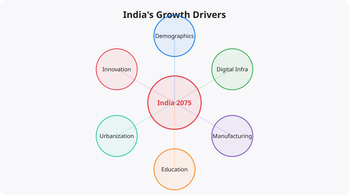

Projecting any country's trajectory over 50 years is an exercise that requires both analysis and humility. History is full of confident predictions that were embarrassingly wrong — experts who could not foresee the collapse of the Soviet Union, who missed the rise of China, who underestimated the impact of the internet. Any projection about India's next 50 years must acknowledge deep uncertainty while still attempting to identify the structural factors and trend lines that matter most.
What follows is not a prediction but an analysis of the forces shaping India's long-term trajectory — the tailwinds, the headwinds, and the variables that will determine which way the balance tips.
India's most important structural advantage over the next several decades is demographic. India has the world's largest youth population — over 600 million people under 25 — and its working-age population will continue growing until around 2040-2045, even as China's working-age population shrinks. This demographic dividend — a growing share of the population at productive working age — creates an opportunity for accelerated economic growth if the education system, job creation mechanisms, and institutions can convert that human potential into productivity.
The demographic window is time-limited. Countries that have successfully captured their demographic dividend — South Korea, Taiwan, Singapore, and to some extent China — did so by combining demographic advantage with investment in education, infrastructure, and governance that allowed their growing working-age populations to be productively employed and well-compensated. Countries that did not make these complementary investments saw their demographic advantage turn into a source of unemployment, underemployment, and social stress. India faces the same binary outcome.
India has established itself as a significant global technology talent pool, and the next 50 years will likely see that position strengthen — if the education system can continue producing quality engineers and if the policy environment supports innovation and entrepreneurship. The global shift to remote work has already demonstrated that location is increasingly irrelevant for knowledge work. Indian engineers, developers, data scientists, and designers are increasingly working directly for global companies at near-global compensation levels.
More importantly, India is beginning to produce globally competitive technology products, not just services. Companies like Zoho, Freshworks, Razorpay, Zerodha, and others have built products serving global markets from Indian foundations. If this product innovation ecosystem matures — supported by venture capital, engineering talent, and an entrepreneurial culture — India could shift from being a technology services provider to a technology innovation creator over the next few decades.
Perhaps the most significant constraint on India's potential is infrastructure. Despite significant investment in roads, railways, ports, and digital infrastructure over the past decade, India's infrastructure quality still significantly lags its economic potential. Poor logistics infrastructure raises the cost of doing business, makes Indian manufacturing less competitive globally, and reduces the productivity of the economy as a whole.
The government's ambitious National Infrastructure Pipeline and programs like PM Gati Shakti represent recognition of this constraint and commitment to addressing it. If infrastructure investment is sustained and executed effectively over the next two to three decades, the productivity gains could be enormous. Historical evidence from other countries — particularly China's rapid infrastructure development from the 1990s through the 2010s — suggests that infrastructure investment at scale is one of the most powerful levers for economic acceleration.
India's large informal economy — estimated to account for 40-50% of GDP and 80-90% of employment in some estimates — represents both a challenge and an opportunity. The gradual formalization of economic activity, accelerated by digital payments (UPI), GST, Aadhaar-linked financial inclusion, and the growth of formal financial services, is bringing more of this activity into the documented and taxed economy. This formalization has costs in the short term (adjustment pain for workers and businesses transitioning from informal to formal) but substantial long-term benefits: higher productivity, better access to credit, improved governance, and stronger fiscal foundations.
India's geopolitical position in the next 50 years is characterized by both opportunity and complexity. The great power competition between the US and China is creating space for a strategically independent India to benefit from multiple relationships simultaneously — maintaining trade with China while receiving technology investment from the US and its allies, attracting manufacturing investment as companies seek to diversify supply chains away from China, and playing an increasingly influential role in shaping global governance frameworks. India's ambition to be a Vishwaguru — a world leader in knowledge and wisdom — may sound aspirational, but the structural positioning of a large, English-speaking, democratic country with technological capability and strategic independence is genuinely favorable in the emerging multipolar world.
The long-term positive trajectory for India is not guaranteed — it is contingent on choices. Education quality at scale, governance improvement and anti-corruption efforts, infrastructure investment and execution, support for entrepreneurship and innovation, and maintaining the social cohesion necessary for a diverse democracy to function effectively — all of these will determine whether India's potential converts into realized prosperity. The opportunity is real. The outcome is not predetermined.
The concepts covered in this article form part of a larger body of knowledge that compounds as you build on it. Real understanding comes not from reading alone, but from applying these ideas in practice — building projects, making mistakes, debugging problems, and iterating. Every concept here is a doorway to a deeper topic worth exploring further. The most effective way to move forward is to pick one idea that resonated most and go deeper: find a hands-on exercise, build something small that uses the concept, or teach it to someone else. Teaching is one of the most powerful learning techniques — explaining a concept clearly reveals exactly where your own understanding has gaps.
Technology learning is a long game. The professionals who build the most capability over time are not those who learn the fastest in any single week, but those who learn consistently over years. Building a daily habit of reading, practicing, and building — even just 30 to 60 minutes a day — compounds dramatically. The journey from beginner to professional is measured in years, not weeks, but the direction matters more than the speed. Keep moving forward.
Disclaimer:
This article is written for educational and informational purposes only.
It does not provide financial, legal, investment, or professional advice.
Cloud services, pricing, security, and practices may vary by provider,
region, and use case. Always verify information from official
documentation before making decisions.
Reading about markets is not investing. Understanding market theory is not making money. The gap between knowledge and results in investing is filled by the practice of forming independent views, testing them against reality, and updating your thinking when evidence contradicts your expectations.
Developing a genuine market view requires: choosing 2-3 indicators to follow consistently rather than tracking dozens superficially, reading primary sources (earnings reports, central bank statements, economic data releases) rather than just media commentary, maintaining an investment journal where you record your reasoning when making decisions, and reviewing that reasoning 6-12 months later to understand where your thinking was right or wrong.
Weekly routine (30 minutes):
Monday: Review portfolio performance vs benchmark
Tuesday: Read one company annual report (if stock investor)
Wednesday: Check economic calendar for key data releases
Thursday: Review Fed/RBI communications from that week
Friday: Journal -- what happened this week vs expectations?
Monthly routine (2 hours):
Review asset allocation vs targets
Rebalance if any asset class drifted more than 5%
Read one investment book chapter or whitepaper
Review all open positions and thesis validity
Quarterly routine (4 hours):
Portfolio review: what worked, what did not, why?
Tax optimization check
Update financial goals
Read one earnings season summary for key companiesMarkets in liquid, public securities are highly efficient at incorporating publicly available information. Reading the same Bloomberg article, watching the same CNBC segment, and following the same analysts as millions of other investors does not give you an informational edge. By the time you read it, the market has likely already priced it in.
Where individual investors can have a genuine edge: patience (most institutional investors face quarterly performance pressure that prevents holding through temporary weakness), sector expertise (knowing an industry deeply as a practitioner gives real insight), tax efficiency (individual investors can optimise for after-tax returns in ways institutions cannot), and behavior (simply not panic selling during drawdowns outperforms most active strategies).
Beginners think about investing as picking the stocks that will go up the most. Experienced investors think about risk management first -- ensuring that mistakes do not destroy the portfolio's ability to recover and compound. The most important risk management principles: never invest money you will need within 5 years, diversify across asset classes and geographies, avoid leverage (borrowed money amplifies both gains and losses), and size positions so that being completely wrong on any single investment does not materially damage the portfolio.
Standard financial planning guidance: build a 3-6 month emergency fund first. Then invest 10-20% of gross income, increasing toward 20%+ as income grows. For aggressive wealth building, aim for a 30-40% savings rate. Invest consistently regardless of market conditions -- time in the market beats timing the market.
Investing is deploying capital for long periods (years to decades) based on fundamental value creation. Trading is buying and selling over shorter timeframes based on price movements. Most retail investors who attempt trading underperform a simple index fund. Investing in low-cost index funds consistently outperforms most active strategies over 10+ year periods.
Start with NIFTY 50 or NIFTY 500 index funds via SIP (Systematic Investment Plan) through any major AMC or broker. Index funds provide diversification, low costs, and performance that matches the market. Add direct equity only after you have at least 6-12 months of investing experience and genuine time to research individual companies.
Yes. India is one of the fastest-growing tech markets globally. These skills are in high demand across startups, MNCs, and product companies in Bangalore, Hyderabad, Pune, and Mumbai.
Follow official documentation, tech blogs from practitioners, GitHub repositories, and communities like Dev.to, Hashnode, and Reddit. Avoid news that creates urgency without substance.
Official documentation first. Then practical tutorials. Then build real projects. SRJahir Tech articles are written from real production experience — bookmark the series that matches your learning goal.
Consistent daily practice for 3-6 months produces real, usable skills. The key is building projects, not just reading. Every article on SRJahir Tech includes practical examples you can implement today.
Yes. All articles on SRJahir Tech are completely free. No paywalls, no subscriptions. Quality technical education should be accessible to everyone, especially aspiring engineers in India.